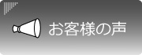
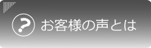

お客様の声.net
お客様の声
を参考に、商品比較、商品購入しましょう！


HOME
> お客様の声(uruoi様)
お客様ページご紹介：ｕｒｕｏｉ様
【お客様の声】
キョウキオラをご愛用のモデルの春山あこ様より
生まれた時からアトピーと診断され、小学校6年生までお肌はボロボロでした。大人になり表面のかさぶたなどの症状はでていないものの、化粧品アレルギーがあり、日々お金も時間もかかる毎日です。これは使えるなって思っていても、体調により目の周りが真っ赤になってしまったり、目がしばしばするなど、つけていられないほどの不快感を感じてしまうこともたびたびあります。そんな状態でもキョウキオラは続けて使うことができました。昔から頭皮にも液体の薬を塗っていたのですが、今は、お風呂上りには顔はもちろんのこと、頭皮にもキョウキオラをたくさん使用します。日本アトピー協会登録会員ということもあり、
安心して使えたうえ、使用して潤いを感じました。
こんなに安心して使えて、潤うものに出会えたことに感謝しています。
キョウキオラをご愛用のシンガーソングライター世手子様より
東京に上京してからアトピーに悩まされていて、保湿をこころがけてきました。 お化粧などすると乾燥してしまいがちだったのですが、キョウキオラを使ったあとにお化粧するとかなり化粧のりがよく、いつまでも潤っていてびっくりしました！ 年中乾燥してしまう乾燥肌の人にもオススメです！
乾燥肌 斎藤さゆり様より
使用を開始したのは、子供のおむつかぶれや肌荒れで悩んでいる時でした。オムツ替え時や入浴後などに使用して、1週間位してくると段々と肌のがさつきがおさまり、１ヶ月位で肌が綺麗な状態に★脇の下などの乾燥してカサつきやすい部分にも使用しています。
ふんわりしたミストなので、とても使用感もよく、肌荒れしている部分にも霧状のミストがやさしく染みわたる感じなのでとても使いやすいのが魅力的★
現在、４本めを使用中なのですが、子供の肌だけではなく、自身のメイク前の下地やメイク直し、ブースターにも使用中です。 下地と使用すると、ファンデなどのメイクノリが良くなったり、乾燥してメイクが浮いた時にも、シュッと一吹きしてパフで抑えるだけでメイク直し完了♪髪の毛から足の先まで全身に使用することができて
使用方法の幅も広いのが嬉しいです♪
乾燥肌 外村美姫様より
軽いアトピーの症状もみられ、お肌が弱くてエステにもなかなか行けない私。完全無添加の「低酸素弱酸性純水」化粧水という事で、こちらなら安心だろうと使い始めました。お肌と同じph5.5なら安心ですよね。空気に触れないエアゾール缶なので、衛生的だし、いつでも気軽にスプレーが出来ます。シューッとするとサッパリしていてとてもつけ心地がよいので、これから春夏にかけては特にすっごく重宝しますね。肌馴染みも良く、お風呂上りに全身にかけても気持ちが良いです。細かいミストは気持ちがよく、ベタつきもないのでサラリと仕上がります。私はブースターとして使っていて、更に化粧水や美容液はつけるのですが、まずはさっと使えるスプレー、手軽で便利です。
混合肌 秋山美世様より
今まで何度かスプレー式の化粧水を使いましたが、これほど粒子が細かいのは初めてです。
粒子が細かいから浸み込む浸み込む～って感じで大変気持ちが良いんです。癒されます♪
私は旅行が大好きでいつも携帯加湿器持参で行くのですが、最近はキョウキオラを肌身離さず持っています（ミニサイズが便利）。夕方、肌が乾燥してきたかな？と思ったら化粧したままスプレーしたらしっとりで、化粧くずれもありません。おかげ様でシワ知らず（笑） ５０代をどう乗り切るか？と思っておりましたが、良い化粧水を見付けられてラッキーでした。お肌ツルツル！ずっと使いたいです♪
普通肌 日向香奈様より
寝起き・外出前・外出後・お風呂上がりにプレ化粧水として使用しています。たった５日間で肌がうるうるになったのが実感できました！ 中でもお風呂上がりは、上がった瞬間にスプレーしておけばいつものスキンケアまでの間、顔がつっぱることはありませんでした。化粧ノリも良くなったし、日焼け止めの効果と持ちも良くなったように思えます。 11ヶ月の娘にも毎食後とお風呂上がりに使用しました。肌に合わないとすぐにブツブツがでますがキョウキオラではまったくそのようなこともなく、今まで皮膚科で保湿剤を処方してもらっていましたが、キョウキオラで大事な大事な娘のお肌をうるうるに保ててとても嬉しいです！ 現在妊娠６ヶ月でお腹が出てきたので、皮膚が引っ張られてずっと痒くて辛かったのですが、夜寝る前と朝の着替え時にスプレーして手でしっかりと馴染ませるとそれだけで痒みが消えました！お腹をなでると中からお返事が来るようで、お腹の赤ちゃんとのスキンシップにもなりました。 スプレーなので届きにくい腰や背中にも使えてとても便利です。これからもしっかりとキョウキオラで保湿して親子共々潤い肌になりたいです！
乾燥肌 三好由貴子様より
私は乾燥肌がひどく、顔だけでなく背中にも使用しています。使って１週間で背中の部分的なかさかさがだんだん改善されてきて、半月たつとつるつる＆すべすべ肌に！
自分の肌に触るのが楽しくなってきました。
そして、息子も同じく乾燥がひどく、二の腕やおしりなど部分的にかさついていましたが、息子の方は使って１０日経つとどこを触ってつるつる肌に！ミストタイプなので使いやすく、息子もすっかり気に入ったようで、お風呂からあがるとすぐに、キョウキオラを持って私に「どーぞ」と手渡してくれます。
親子そろって同じ商品を使える所も、使って乾燥肌の克服ができる点も気に入っています。
乾燥肌 三浦 靖世様
プレ化粧水というもの自体あまり使用したことがなかったのですが、
このミストを使用するようになってから明らかに肌のバリバリ感と言いますか、酷い乾燥が目に見えてなくなりました。
こういったミストが色々なメーカーから発売されていて、アットコスメでも人気なのは随分昔から知っていたのですが、
「ただの水なのになんでこんなに人気なの？」とかなり怪しい目で見ておりました^^;
ですがキョウキオラは、実際に「水分量が上がった」というデータも出ているとのことで、期待しながら継続して使用してみましたところ、
確かに「ただの水だと思っていたのに乾燥がやわらいでいる」と感じました！
特に、お風呂上がりに一番に使用してみると効果がわかりやすかったです。お風呂上がりに何もつけないでいると、ガッサガサで突っ張って酷い状態になってしまうのですが・・・お風呂上がりにキョウキオラを吹きかけると、しばらくしても突っ張り感があまり出ません。もちろん、その後化粧水はつけなければなりませんが、ミストだけでも違いが出るのだと驚いています。
乾燥肌 酒井惠美様より
キョウキオラは、ミストが
細かく霧のように出てくる
のですごく気持ちが良くて本当に何回も何回も使ってしまいます！子供たちも気持ちが良いのか、お風呂上がりに逃げることなくスプレーさせてくれるので、乾燥することなく過ごせています。
お化粧の上からキョウキオラをスプレーしてもメイクが崩れにくい
ので、お外遊びには必ず鞄に忍ばせて潤い補給しています！髪の毛のドライヤー時に色々ヘアクリームなどを付けるよりサラサラになる気がします。
混合肌 満田様より
ミスト化粧水は色々と使用してきましたが、
使用感と浸透力の高さはキョウキオラがダントツ
です。 粒子の細かいミスト化粧水がとても気持ち良く、届いたその日からとにかくこまめにスプレーしていました。最近では、
目と口周りの乾燥も気にならなくなってきました。
アトピー肌の娘もお風呂上がりに使用する事で、肌の痒みも軽減されたようで、以前ほど体を掻く事がなくなってきました。 完全無添加なので親子で安心して使用しています。
混合肌 小野様より
冷暖房、乾燥時期に、今まではそれをケアーすることをあまり考えていませんでしたが、キョウキオラの完全無添加ミスト化粧水を使うようになってから、しっとりウルウル。７０代になっても若者に負けません！ 最初は使い方がよくわかりませんでしたが、娘にたずねたら、今はやりの相当評判が良い製品だと言われ、使い方も教えてもらい、それから朝晩シュッシュシュッシュと気持ちよく潤いを我が乾燥肌に振りかけました。私だけかもしれませんが、乾燥肌にこういう良いものがあるということを知らない年配者もいると思います。 冷暖房中、春の乾燥時期などはこういう便利なものがあることを知っていればもっとケアーが上手にできるのではないでしょうか。♪
乾燥肌 西様より
私は一年中乾燥肌で、夏でもクーラーのきいた部屋に居ることが多くて常に乾燥しっぱなしです。乾燥が気になるときに、顔、首、デコルテ、背中、手、、髪、足などにシュっとかけてケアしてます。スプレータイプだから背中とか届きにくいところまでしっかりケアできて使いやすいです。夏場は背中やデコルテに赤い湿疹みたいなのが出来るときがあるのですがキョウキオラを使うようになってからは湿疹が出来にくくなったり、出来てもすぐに治ったりしていて効果ありです！皮膚科の塗り薬いらずです(笑) なるべく薬には頼りたくない派なので良いことですね☆お風呂上がりに使うととても気持ちいい！ 汗もすーっとひいてくれる。爽快感（*^_^*） コットンに湿らせて顔をパッティングするととっても浸透が早くて、さらさら・潤う～。ベタつかないから心地良い！
アトピー肌 宇田川様より
スプレーした瞬間ふぁーっと顔にミストがかかって気持ちよかったです(^^) アトピーの気がある私はしみる化粧水がありますが、そういう刺激も一切なく、水だけなのに肌の奥に染み込む感じがとてもうれしいです。 3歳と０歳の子供たちにも使ってみましたが、気持ちがいいようで二人とも笑顔でした。ありがとうございます♪
乾燥肌 幸子様より
お風呂上りにキョウキオラをシュッとするだけでしばらく潤うので、その間に子供の世話ができました。 シュッとしたあとに乳液をつけると、浸透性が高まり、よく馴染みました。乾燥した時に、お化粧をした上からシュッとしたけれど、お化粧崩れがなく、しっかり潤いました！
乾燥肌 Ｏ様より
お風呂上がりに息子と一緒にキョウキオラを使ってます。私は乾燥肌が酷かったですが、普段のスキンケアにプラスしてキョウキオラを使うようになったら、
化粧のりが良くなりました。
アトピーの息子も、プールの塩素でカサカサになって帰ってきますが、お風呂上がりと朝に使うようにしたら、写真の通りモチモチ肌に！ステロイドに頼らず、保湿ローションをプラスするだけで良くなりました。気持ち良く楽しく使ってます。
（スタッフより…）Ｏ様は化粧品店で肌チェックをされたそうです。
キョウキオラを使用される以前と比べ、「乾燥肌が改善されている」という結果
が出たそうです！！おめでとうございます(^^)/
敏感肌 H様より
お風呂上がりに、乾燥で荒れているデコルテ周辺に使用しています。今まではクリームを塗っていましたが、塗ったときはしっとりするけど時間がたつとかゆくなったり肌トラブルの改善にはつながりませんでした。この商品はクリームに比べるとかなりもの足りなさを感じました。なのに
肌がすごく自然で落ち着いています。
肌本来にいいというのを実感しました。その証拠にかゆみが減ってきました。昔からアトピー、敏感、乾燥、季節の変わり目にトラブルの絶えない肌で、とにかく高い美容液や保湿力の高いクリームを使うことがいいと思っていました。でもこれを使って、肌自体をまず整えないと意味がないんだなと感じました。
混合肌 Ｉ様より
キョウキオラは、メイク前やメイク後、
体中にといろんなところに使えて重宝しています♪
お肌にすっとなじんで落ち着く
感じがよく、そして
お肌にやさしい
ので気に入っています。メイクがよく脂浮きして崩れるのですが、キョウキオラをメイク後にシュッとすると、
メイク直しも少なくてすむようになりました！
そして、夏のお散歩で傷んだ愛犬の肉球にもシュッとしてもみもみしています♪
アトピー肌 匿名様より
旅行が趣味でスパ温泉好きの私には携帯に便利なミニサイズ ﾎﾝﾄ 待ってました待ってました～～ 相変わらず きめ細かいふんわりミスト・・・・ このあとのお手入れ成分の導入作用もあるので大切な成分も優しくお肌に浸透していくのが嬉しいな・・・ 大きいボトルの方をリピ購入してアトピー肌の娘が愛用しているけど、このミニサイズを使わせたところ 「この大きさなら子供の小さな手にもなじむから、アトピーの子がお風呂上がりに自分でスプレーしてケアできてイイネ！」と申しておりました。
混合肌 Ｓ様より
まず使用感に驚きました。 現在もスプレータイプの化粧水や日焼け止めを持っています。でも勢いが強く、水に顔を浸ける事も出来ない私には、普通のスプレーは、使用前に覚悟がいるんです。キョウキオラはとても優しくソフトに広がるスプレーで、気持ちよく使えました。いつものケアの前に使用したところ、艶々肌になれましたよー！！！ カサカサかかとにたっぷりシューっとして馴染ませた後に、クリームを塗ると、角質が日々確実に柔らかくなります。 肌の弱い娘も、気持ちのよいスプレーが気に入り、お風呂上がりに全身に使用しています。日焼けによるお肌のカサカサが、落ち着いてきています。
普通肌 Ｆ様より
かゆくなりがちな目の周りの赤みが引いてつるつるになり、化粧をしても乾燥が気にならなくなりました。これからは我が家の定番になりそう！
サービス名・商品名
ミスト状無添加化粧水 KYOKIORA(キョウキオラ)
会社名
株式会社uruoi
サービスジャンル・商品ジャンル
化粧水
特典
現在は行っておりません。あらかじめご了承くださいませ。
お客様の声ページURL
http://www.kyokiora.com/
企業ホームページURL
http://www.kyokiora.com/
商品内容（ページ内容）
KYOKIORAは特許製法で作られた、今までにないプレケア化粧水です。不純物ゼロの純粋なのに、潤いがしっかりと角質層へと行き渡ります。
連絡先
TEL:075-221-5000
FAX:075-221-5010
MAIL:
info@uruoimase.com
会社所在地
〒604-8182 京都市中京区堺町通姉小路下ル大阪材木町690-2 アンビル１Ｆ
メッセージ
KYOKIORAは不純物ゼロの純水100％。薬剤、防腐剤などは一切含みません。その結果、目・鼻・口に入っても安心・安全です。ぜひ、一度お試しくださいませ。